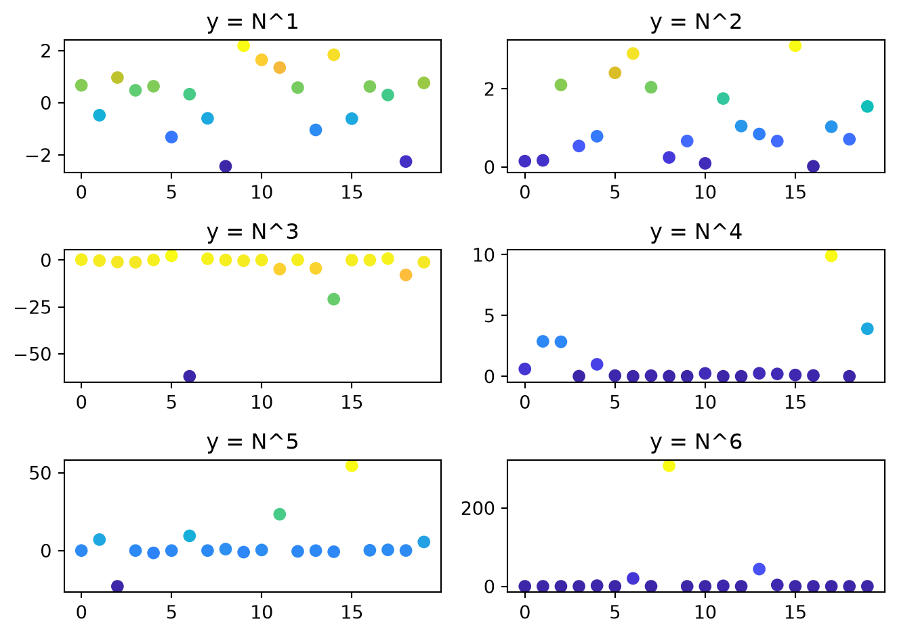

import sciris as sc
ob = sc.obj(a=['some', 'strings'], b=[1,2,3])
print(ob)sc.obj(a=['some', 'strings'], b=[1, 2, 3])Needing a better way of ordering dictionaries was one of the original inspirations for Sciris back in 2014. In those dark days of Python <=3.6, dictionaries were unordered, which meant that dict.keys() could give you anything. (And you still can’t do dict.keys()[0], much less dict[0]). This tutorial describes sc.obj, Sciris’ dict that is also an object, and its pandas-powered pseudorelative, sc.dataframe.
sc.objIn basically every situation except one, an sc.obj can be used like a dict. (Since this is a tutorial, see if you can intuit what that one situation is!) For example, creating an sc.obj works just like creating a regular dict:
sc.obj(a=['some', 'strings'], b=[1, 2, 3])And it is one:
True
Keys: ['a', 'b']
Values: [['some', 'strings'], [1, 2, 3]]
Items: [('a', ['some', 'strings']), ('b', [1, 2, 3])]Looks pretty much the same as a regular dict, except that ob.keys() returns a regular list (so, yes, you can do ob.keys()[0]).
When you’re just writing throwaway analysis code, it can be a pain to type mydict['key1']['key2'] over and over. (Right-pinky overuse is a real medical issue.) With an sc.obj, keys and attributes are the same thing, so you can use “object syntax” (a.b) instead of “dict syntax” (a['b']). This is especially handy for using f-strings, since you don’t have to worry about nested quotes:
Checking ob.a = ['some', 'strings']
Checking ob["a"] = ['some', 'strings']
['a', 'b', 'c']You can also do things you can’t do with a regular dict, such as:
Item 0 is called a and has value ['some', 'strings']
Item 1 is called b and has value [1, 2, 3]
Item 2 is called c and has value a new keyWe can, as you probably guessed, also retrieve items by index as well:
Remember the question about the situation where you wouldn’t use an sc.obj? The answer is if your dict has integer keys, then although you still could use an sc.obj, it’s probably best to use a regular dict. But even float keys are fine to use (if somewhat strange).
For example, let’s say we want to store a number of named simulation results. Look at how we’re able to leverage sc.obj in the loop that creates the plots:
import numpy as np
import matplotlib.pyplot as plt
class Sim:
def __init__(self, n=20, n_factors=6):
self.results = sc.obj()
self.n = n
self.n_factors = n_factors
def run(self):
for i in range(self.n_factors):
label = f'y = N^{i+1}'
result = np.random.randn(self.n)**(i+1)
self.results[label] = result
def plot(self):
with sc.options.context(jupyter=True): # Jupyter-optimized plotting
plt.figure()
rows,cols = sc.getrowscols(len(self.results))
for i,label,result in self.results.enumitems(): # sc.obj magic!
plt.subplot(rows, cols, i+1)
plt.scatter(np.arange(self.n), result, c=result, cmap='parula')
plt.title(label)
sc.figlayout() # Trim whitespace from the figure
sim = Sim()
sim.run()
sim.plot()
We can quickly access these results for exploratory data analysis without having to remember and type the labels explicitly:
Sim results are
sc.obj({
'y = N^1': array([ 0.66847037, -0.47830707, 0.96683675, 0.47749227, 0.63324288,
-1.31397901, 0.32885402, -0.59747817, -2.43382569, 2.18421311,
1.64482691, 1.34890424, 0.57995814, -1.04066773, 1.84060117,
-0.60941228, 0.62429512, 0.29793462, -2.25063603, 0.76045932]),
'y = N^2': array([0.14826615, 0.16861623, 2.1004975 , 0.53615476, 0.78615566,
2.40928397, 2.90354735, 2.04020939, 0.24382593, 0.66410148,
0.09179223, 1.75222409, 1.04767173, 0.84359586, 0.66230717,
3.10343981, 0.01677748, 1.02975139, 0.70992916, 1.54838751]),
'y = N^3': array([ 2.39617564e-01, -2.89374284e-01, -1.02868307e+00, -1.16983096e+00,
6.87135636e-02, 2.28319444e+00, -6.20128788e+01, 6.88443558e-01,
5.05917962e-02, -3.65751436e-01, 3.67892478e-02, -4.84213293e+00,
1.21439943e-01, -4.39144137e+00, -2.08748782e+01, -4.25057884e-04,
6.95938521e-03, 7.54348120e-01, -7.94910555e+00, -1.14381731e+00]),
'y = N^4': array([6.04967846e-01, 2.87420563e+00, 2.83633332e+00, 8.94275612e-03,
9.85067250e-01, 5.50669865e-02, 1.16354448e-03, 5.24619060e-02,
7.64712367e-03, 2.76549411e-06, 2.39854845e-01, 1.93589946e-05,
3.80564986e-07, 2.48208806e-01, 1.95208110e-01, 1.06951905e-01,
6.72131348e-02, 9.91139630e+00, 1.10983397e-04, 3.91363568e+00]),
'y = N^5': array([ 1.63059518e-02, 7.05818399e+00, -2.29667833e+01, -2.88437907e-04,
-1.50031847e+00, -4.27321819e-03, 9.45825727e+00, 1.02783690e-05,
9.35986842e-01, -1.00232116e+00, 3.68544341e-01, 2.33170564e+01,
-5.13901713e-01, -2.70844694e-02, -7.51017843e-01, 5.44575965e+01,
1.77305810e-01, 4.45831947e-01, 5.00679255e-02, 5.54343058e+00]),
'y = N^6': array([2.98096687e-02, 2.99833700e-03, 2.99768670e-02, 9.41288082e-03,
1.72819148e+00, 5.86812814e-02, 2.02529314e+01, 1.47790241e-01,
3.07732643e+02, 4.50498600e-04, 7.89250572e-08, 1.22261423e+00,
4.11473447e-02, 4.40248233e+01, 3.46528209e+00, 3.59255319e-02,
5.69077195e-05, 1.76625835e-06, 6.42774708e-16, 9.31909938e-02]),
})
The first set of results is
[ 0.66847037 -0.47830707 0.96683675 0.47749227 0.63324288 -1.31397901
0.32885402 -0.59747817 -2.43382569 2.18421311 1.64482691 1.34890424
0.57995814 -1.04066773 1.84060117 -0.60941228 0.62429512 0.29793462
-2.25063603 0.76045932]
The first set of results has median
0.529 (95% CI: -2.347, 2.021)This is a have-your-cake-and-eat-it-too situation: the first set of results is correctly labeled (sim.results['y = N^1']), but you can easily access it without having to type all that (sim.results[0]).
What if a key has the same name as a method? Methods are protected, so the method keeps working, and you get the key using dict syntax:
This matters if your keys come from somewhere else, such as a data file, since you don’t have to worry about one of them being called clear or pop. Trying to set rates.clear = 0.1 raises an error; rates['clear'] = 0.1 is fine.
sc.obj is about as fast as a plain Python object, and nearly as fast as a plain dict. Approximate times per operation, in nanoseconds:
ob['a'] |
ob.a |
ob['a'] = 1 |
ob.a = 1 |
Create | |
|---|---|---|---|---|---|
dict |
10 | n/a | 15 | n/a | 50 |
sc.obj |
20 | 15 | 15 | 20 | 300 |
sc.objdict |
40 | 50 | 120 | 240 | 650 |
These differences won’t matter unless you’re doing millions of operations. But if you’re reading this, chances are high that you do sometimes need to do millions of dict operations, so it’s nice not to have to choose between speed and convenience.
Sciris has three other dicts, for less common needs:
sc.objdict is a slower version of sc.obj with a few more features: setting items by position (ob[0] = 3), getting them with a list of keys (ob[['a','b']]), and default values (defaultdict).sc.odict is like sc.objdict, but with dict syntax only, and more verbose output for storing large(ish) objects.sc.dictobj is a simpler dict with object syntax, without the methods or indexing of sc.obj, and a key can replace a method of the same name.You can also subclass sc.obj; see its documentation for how to add attributes that aren’t keys.
The Sciris sc.dataframe() works exactly like pandas pd.DataFrame(), with a couple extra features, mostly to do with creation, indexing, and manipulation.
Any valid pandas dataframe initialization works exactly the same in Sciris. However, Sciris is a bit more flexible about how you can create the dataframe, again optimized for letting you make them quickly with minimal code. For example:
It’s not a huge difference, but the Sciris one is shorter. Sciris also makes it easier to define types on dataframe creation:
x y z
0 a 1.0 True
1 b 2.0 False
2 c 3.0 TrueYou can also define data types along with the columns:
x y z
0 a 1.0 True
1 b 2.0 False
2 c 3.0 TrueThe df.disp() command will do its best to show the full dataframe. By default, Sciris dataframes (just like pandas) are shown in abbreviated form:
0 1 2 3 4 5 6 \
0 0.029026 0.585952 0.255995 0.534887 0.108738 0.689691 0.185298
1 0.928069 0.023061 0.926114 0.571395 0.952071 0.969978 0.056782
2 0.562852 0.502663 0.911621 0.751980 0.689734 0.493675 0.013242
3 0.813209 0.978221 0.349184 0.814885 0.963655 0.029203 0.390641
4 0.559774 0.798570 0.671349 0.871844 0.032180 0.395298 0.303383
.. ... ... ... ... ... ... ...
65 0.891641 0.312288 0.499528 0.811273 0.589942 0.475723 0.542509
66 0.928461 0.641405 0.109657 0.417291 0.090017 0.549158 0.920346
67 0.233007 0.067183 0.073577 0.968391 0.914368 0.919930 0.406790
68 0.790867 0.356334 0.640005 0.197173 0.646891 0.423401 0.561110
69 0.650919 0.417577 0.533324 0.421256 0.098470 0.459574 0.327122
7 8 9
0 0.342482 0.648130 0.833506
1 0.271223 0.303643 0.083861
2 0.114327 0.293954 0.059156
3 0.148459 0.212401 0.656561
4 0.222765 0.505333 0.218903
.. ... ... ...
65 0.051704 0.942246 0.899768
66 0.394797 0.537389 0.522939
67 0.190090 0.089426 0.516978
68 0.770520 0.183947 0.707197
69 0.864601 0.641957 0.100144
[70 rows x 10 columns]But sometimes you just want to see the whole thing. The official way to do it in pandas is with pd.options_context, but this is a lot of effort if you’re just poking around in a script or terminal (which, if you’re printing a dataframe, you probably are). By default, df.disp() shows the whole damn thing:
0 1 2 3 4 5 6 7 8 9
0 0.0290 0.5860 0.2560 0.5349 0.1087 0.6897 0.1853 0.3425 0.6481 0.8335
1 0.9281 0.0231 0.9261 0.5714 0.9521 0.9700 0.0568 0.2712 0.3036 0.0839
2 0.5629 0.5027 0.9116 0.7520 0.6897 0.4937 0.0132 0.1143 0.2940 0.0592
3 0.8132 0.9782 0.3492 0.8149 0.9637 0.0292 0.3906 0.1485 0.2124 0.6566
4 0.5598 0.7986 0.6713 0.8718 0.0322 0.3953 0.3034 0.2228 0.5053 0.2189
5 0.2878 0.3637 0.4654 0.2912 0.8538 0.5159 0.2858 0.2628 0.7153 0.9503
6 0.9747 0.1558 0.0607 0.8757 0.2664 0.4232 0.8990 0.3732 0.6509 0.9647
7 0.3622 0.1655 0.4402 0.7150 0.0191 0.9927 0.6593 0.5848 0.9493 0.7436
8 0.5331 0.9320 0.9358 0.4868 0.5707 0.1803 0.5735 0.1516 0.5053 0.0263
9 0.3279 0.9999 0.4802 0.9398 0.2758 0.0416 0.0365 0.1584 0.2369 0.5643
10 0.1664 0.2748 0.2652 0.9245 0.2313 0.4464 0.5023 0.6139 0.6779 0.4479
11 0.8778 0.1222 0.2162 0.9806 0.5005 0.7837 0.2873 0.8467 0.7037 0.7546
12 0.1744 0.5021 0.0320 0.5246 0.5265 0.5951 0.6044 0.3202 0.5026 0.5922
13 0.9618 0.9736 0.9503 0.1373 0.2747 0.3145 0.5852 0.1405 0.2452 0.5349
14 0.9918 0.7039 0.9682 0.2923 0.7331 0.5960 0.7839 0.8138 0.7281 0.3989
15 0.6589 0.9561 0.9586 0.0015 0.9978 0.6426 0.6003 0.3196 0.0489 0.2855
16 0.9815 0.0086 0.2894 0.8547 0.2903 0.9741 0.6234 0.8738 0.5778 0.0295
17 0.2072 0.4984 0.2765 0.1265 0.6128 0.4615 0.2681 0.5825 0.9799 0.3471
18 0.8164 0.2179 0.8809 0.6865 0.7122 0.8813 0.8035 0.2615 0.7038 0.3473
19 0.8507 0.9847 0.1569 0.9390 0.7826 0.3583 0.8827 0.3449 0.2854 0.7540
20 0.0998 0.7288 0.3482 0.2141 0.2848 0.1148 0.8627 0.7346 0.7380 0.9504
21 0.4665 0.8026 0.7779 0.7458 0.8063 0.2268 0.9474 0.8037 0.8756 0.1001
22 0.8186 0.8774 0.2593 0.6574 0.7184 0.9446 0.6080 0.2054 0.6373 0.4763
23 0.4554 0.3537 0.8973 0.4329 0.8089 0.2282 0.7992 0.3216 0.1825 0.0249
24 0.0821 0.8861 0.1942 0.6951 0.2420 0.5608 0.0507 0.5775 0.4473 0.1438
25 0.8929 0.9686 0.5532 0.9879 0.9073 0.4495 0.8584 0.5873 0.0831 0.6857
26 0.6399 0.9443 0.3503 0.9695 0.4907 0.7200 0.6953 0.0396 0.3451 0.5796
27 0.8734 0.6400 0.4338 0.2201 0.6509 0.4454 0.5869 0.1335 0.9359 0.4819
28 0.9512 0.4511 0.1914 0.2776 0.5018 0.9950 0.6003 0.3418 0.6031 0.4848
29 0.9522 0.2950 0.7308 0.2384 0.3446 0.9846 0.0752 0.3838 0.6620 0.5981
30 0.3009 0.4187 0.1345 0.4221 0.0124 0.5016 0.8283 0.3836 0.8206 0.9877
31 0.7816 0.5261 0.9739 0.7536 0.3297 0.2745 0.9653 0.6911 0.6091 0.4928
32 0.8217 0.6375 0.6195 0.8561 0.7312 0.9558 0.2039 0.7930 0.2468 0.2082
33 0.3437 0.5561 0.1115 0.0001 0.8979 0.0501 0.2534 0.2608 0.5261 0.3829
34 0.7426 0.7551 0.7074 0.6409 0.1838 0.1545 0.0518 0.1096 0.4741 0.2700
35 0.4248 0.0554 0.4960 0.6691 0.5936 0.9339 0.4766 0.5388 0.0189 0.0724
36 0.4235 0.3347 0.4449 0.6484 0.1622 0.8256 0.2326 0.2696 0.5474 0.8008
37 0.2130 0.0619 0.9749 0.8840 0.8356 0.7283 0.7857 0.0575 0.5184 0.4544
38 0.3231 0.2104 0.3875 0.4925 0.1593 0.1910 0.7848 0.8114 0.2539 0.7163
39 0.7292 0.2201 0.1709 0.4998 0.9385 0.3486 0.9374 0.8145 0.2758 0.6901
40 0.9424 0.3998 0.3801 0.7548 0.5710 0.6711 0.9686 0.3866 0.6536 0.8260
41 0.6932 0.4880 0.3487 0.2837 0.8416 0.7541 0.6593 0.4880 0.1818 0.7857
42 0.2627 0.6832 0.3435 0.8330 0.9556 0.6258 0.6065 0.5730 0.6473 0.7872
43 0.1672 0.1662 0.2687 0.4110 0.0659 0.4889 0.4595 0.1604 0.0947 0.7168
44 0.6824 0.3896 0.0838 0.4587 0.7331 0.3071 0.2041 0.9822 0.5020 0.4663
45 0.0027 0.8613 0.3128 0.8699 0.8619 0.3720 0.5898 0.8573 0.8999 0.6431
46 0.1305 0.0617 0.8911 0.6179 0.3415 0.5300 0.5610 0.7708 0.7271 0.5861
47 0.2436 0.9499 0.3119 0.8105 0.6862 0.2183 0.0321 0.3441 0.8257 0.9610
48 0.7030 0.3539 0.6659 0.5728 0.7804 0.6252 0.9365 0.3720 0.0653 0.1102
49 0.0043 0.8222 0.8896 0.6322 0.2196 0.5040 0.8056 0.3306 0.1504 0.3463
50 0.7819 0.2632 0.9509 0.6734 0.7086 0.1866 0.1325 0.2353 0.6832 0.9413
51 0.4075 0.3387 0.2954 0.5475 0.8765 0.2202 0.6740 0.6346 0.7295 0.6130
52 0.9596 0.1106 0.3169 0.4564 0.2625 0.1070 0.2728 0.2975 0.2131 0.8735
53 0.9373 0.6233 0.5208 0.9066 0.7721 0.7780 0.3014 0.2775 0.3344 0.8869
54 0.9182 0.9081 0.9488 0.6633 0.6160 0.7769 0.4750 0.8970 0.6322 0.0342
55 0.5201 0.0666 0.2439 0.6944 0.7832 0.7973 0.9797 0.6473 0.6978 0.3870
56 0.2493 0.7664 0.2093 0.0986 0.0749 0.1954 0.9187 0.6762 0.6400 0.2781
57 0.4214 0.7150 0.3883 0.3382 0.5534 0.4620 0.4201 0.3279 0.6687 0.9505
58 0.1403 0.7261 0.8475 0.6610 0.6904 0.1326 0.1414 0.9072 0.5579 0.1549
59 0.3832 0.0741 0.1131 0.1212 0.6675 0.3782 0.3765 0.7235 0.4266 0.8356
60 0.2823 0.5073 0.8429 0.5289 0.1689 0.7756 0.6276 0.7525 0.6945 0.8109
61 0.6443 0.5672 0.6720 0.4866 0.0171 0.7044 0.8854 0.4945 0.7713 0.5965
62 0.8824 0.0368 0.3316 0.8573 0.9242 0.9171 0.0811 0.0728 0.0840 0.9027
63 0.9583 0.1002 0.4647 0.5605 0.3818 0.1811 0.6091 0.8166 0.0675 0.2291
64 0.7106 0.6749 0.7255 0.1120 0.0727 0.8169 0.7534 0.7574 0.7978 0.1879
65 0.8916 0.3123 0.4995 0.8113 0.5899 0.4757 0.5425 0.0517 0.9422 0.8998
66 0.9285 0.6414 0.1097 0.4173 0.0900 0.5492 0.9203 0.3948 0.5374 0.5229
67 0.2330 0.0672 0.0736 0.9684 0.9144 0.9199 0.4068 0.1901 0.0894 0.5170
68 0.7909 0.3563 0.6400 0.1972 0.6469 0.4234 0.5611 0.7705 0.1839 0.7072
69 0.6509 0.4176 0.5333 0.4213 0.0985 0.4596 0.3271 0.8646 0.6420 0.1001You can also pass other options if you want to customize it further:
0 1 ... 8 9
0 2.9e-02 5.9e-01 ... 6.5e-01 8.3e-01
1 9.3e-01 2.3e-02 ... 3.0e-01 8.4e-02
2 5.6e-01 5.0e-01 ... 2.9e-01 5.9e-02
3 8.1e-01 9.8e-01 ... 2.1e-01 6.6e-01
4 5.6e-01 8.0e-01 ... 5.1e-01 2.2e-01
.. ... ... ... ... ...
65 8.9e-01 3.1e-01 ... 9.4e-01 9.0e-01
66 9.3e-01 6.4e-01 ... 5.4e-01 5.2e-01
67 2.3e-01 6.7e-02 ... 8.9e-02 5.2e-01
68 7.9e-01 3.6e-01 ... 1.8e-01 7.1e-01
69 6.5e-01 4.2e-01 ... 6.4e-01 1.0e-01
[70 rows x 10 columns]All the regular pandas methods (df['mycol'], df.mycol, df.loc, df.iloc, etc.) work exactly the same. But Sciris gives additional options for indexing. Specifically, getitem commands (what happens under the hood when you call df[thing]) will first try the standard pandas getitem, but then fall back to iloc if that fails. For example:
——————————————————————— Regular pandas indexing ——————————————————————— 23 ————————————————————————— Pandas-like iloc indexing ————————————————————————— x 2 values 23 valid 0 Name: 1, dtype: int64 ——————————————————————— Automatic iloc indexing ——————————————————————— x 2 values 23 valid 0 Name: 1, dtype: int64
One quirk of pandas dataframes is that almost every operation creates a copy rather than modifies the original dataframe in-place (leading to the infamous SettingWithCopyWarning.) This is extremely helpful, and yet, sometimes you do want to modify a dataframe in place. For example, to append a row:
x y z
0 a 1 1
1 b 2 0
2 c 3 1
3 d 4 0That was easy! For reference, here’s the pandas equivalent (since append was deprecated):
That’s rather a pain to type, and if you mess up (e.g. type newrow instead of [newrow]), in some cases it won’t even fail, just give you the wrong result! Crikey.
Just like how sc.cat() will take anything vaguely arrayish and turn it into an actual array, sc.dataframe.cat() will do the same thing: